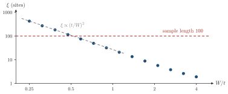

Advanced Quantum Materials 2027 · All lectures · Lecture notes
Session 9. Excitations and Defects in Quantum Materials
9.10b Random disorder and the special role of one dimension
In the first part we met extended, critical and localized states, and we saw how the \(\mathrm{IPR}\) separates them. Let us now take disorder that is really random.
Fully disordered case. Now we take an onsite potential that is really random, with strength \(W\), \(H = -t\sum_n (c_n^\dagger c_{n+1} + \text{h.c.}) + \sum_n w_n\, c_n^\dagger c_n\), where \(w_n\) is taken uniformly from \([-W,W]\). At \(W=0\) this is an ordinary clean metal, with the band structure of the periodic hopping alone, and as \(W\to\infty\) every eigenstate becomes concentrated on a single site. In dimension \(d\geq 3\) there is a real Anderson localization transition at a finite critical disorder \(W_c\). There is a real mobility edge that separates extended metallic states from localized states, which is the kind of “critical point” described on the slides. Below the transition, or at any energy on the extended side of a mobility edge, the system conducts. Above it, there are states at every energy, so there is no spectral gap in the density of states, but these states cannot carry current, so there is a transport gap. This means that the Anderson insulator is an insulator with no gap at all in its spectrum, which is a very unusual state of matter compared with every band insulator or Mott insulator that we have seen so far in this course.
The special role of one dimension. In \(d=1\), and in a marginal way also in \(d=2\) according to the scaling theory of localization, no real metallic phase survives at any non-zero disorder in the thermodynamic limit, since an arbitrarily small \(W>0\) localizes every state at long enough distances. What survives is a finite localization length \(\xi(W)\). For weak disorder close to the band center of the 1D model, it scales as \(\xi(W) \propto (t/W)^2\), which diverges as \(W\to 0\). A finite sample that is shorter than \(\xi(W)\) still looks metallic in practice, and only when the length of the sample is larger than \(\xi(W)\) do we see the localized, insulating behavior in transport. This is the exact sense in which “weak disorder in 1D” and “genuinely metallic” are never the same statement, although they can look the same at short length scales.

In the one-dimensional chain at weak disorder we reduce \(W\) by a factor \(2\). By which factor does the localization length \(\xi\) change?
Show the answers
- A. ✗ False
This is false. For \(\xi\propto(t/W)^2\) the dependence is quadratic. Going from \(W=0.5t\) to \(0.25t\) gives \(\xi\) a factor \(4\), and not \(2\).
- B. ✓ True
This is true. With \(\xi\propto(t/W)^2\), halving \(W\) multiplies \(\xi\) by \(2^2=4\). A state with \(\xi=100\) sites becomes \(400\) sites, and it is still localized.
- C. ✗ False
This is false. Any disorder localizes, but \(\xi\) depends on \(W\). For \(\xi=100\) sites a chain of \(20\) sites looks extended, and reducing \(W\) makes \(\xi\) larger.
In \(d=3\) the disorder is above \(W_c\), and the Fermi level is in the region of localized states. Which statement describes the Anderson insulator?
Show the answers
- A. ✗ False
This is false. A band insulator has no states at the Fermi level. In the Anderson insulator at \(W=20t\) the density of states at the band center is about \(1/W=0.05/t\) per site, which is finite.
- B. ✓ True
This is true. The density of states is finite inside the band, so there is no spectral gap. Localized states at different positions do not connect, so at \(T=0\) the conductance falls as \(e^{-L/\xi}\).
- C. ✗ False
This is false. Above \(W_c\) the mobility edges have met at the band center, so no extended state is left at the Fermi level. The conductance of a sample of length \(L\) decays as \(e^{-L/\xi}\), so it goes to zero for large \(L\).
Try it. Run the cell and look at the left plot, with the average of \(1/\lambda\) against the random potential. It is already finite at \(v=0.5\) and it grows smoothly, with no threshold, as in the one-dimensional argument above. Compare it with the quasiperiodic plot, which stays near zero up to \(v\approx2\).
Notebook check-in: session9.ipynb, “The impact of disorder in different systems” (Core), “Extended and localized states in quasicrystals” (Challenge), and “Localization due to random disorder” (Core)
Change the strength of the quasiperiodic modulation, and separately the strength \(W\) of the random disorder, and compute (9.12) for the eigenstates that you obtain in each case. Look at how the \(\mathrm{IPR}\) changes from a behavior like \(1/N\) to a behavior like \(O(1)\) as you increase the strength of the potential. Try to find by eye where the change from extended to localized states happens in each of the two models, and compare it with the language of critical points and mobility edges above.